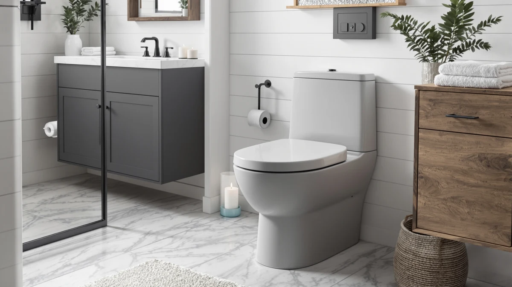

EaziRinsy Corner Toilet Elongated Review (2026): Worth It?
Prices and picks verified as of October 2026. Independent, reader-supported reviews.


Quick Answer
The EaziRinsy Corner Toilet Elongated Compact is a space-saving pick for bathrooms where a standard toilet footprint doesn't fit, priced at $319.66. If you want a more established one-piece brand at a similar price, the WOODBRIDGE and HOROW alternatives below are worth comparing first.
Our pick: EaziRinsy Corner Toilet Elongated Compact, $319.66 Check Price on Amazon
Bottom line: our top pick is the EaziRinsy Corner Toilet Elongated at $319.66.
Things to Know Before You Buy
- Corner installation needs a different rough-in layout than a standard wall-mounted toilet, so measure your corner space before you buy any corner toilet, including this EaziRinsy corner toilet elongated model.
- One-piece construction means the tank and bowl are molded together, which removes the seam where water and grime collect on two-piece toilets.
- All four one-piece toilets compared in this review, the EaziRinsy, two WOODBRIDGE models, and the HOROW T0338WBC, use an elongated bowl and sit within about $15 of each other, from $305.27 to $319.66.
- Neither EaziRinsy nor Amazon publishes a rating or review count for this listing, so this review leans on verified owner comments and manufacturer specs rather than star ratings.
This EaziRinsy corner toilet elongated review compares the brand's compact corner model against three established one-piece alternatives, so you can decide whether the space-saving design is worth $319.66 in your bathroom.
EaziRinsy's pitch is simple: a one-piece, elongated-bowl toilet shaped to fit a bathroom corner instead of a flat wall. Corner toilets solve a narrower problem than most one-piece buying guides cover. They matter most in a bathroom where the only open plumbing run sits in a corner rather than along a wall, which shows up often in older homes, converted closets, and half-baths carved out of unused space. WOODBRIDGE and HOROW, two brands that turn up more often across one-piece toilet comparisons, sell standard-position elongated models in the same $305 to $310 range. The rest of this review breaks down what the corner design actually buys you, and when the cheaper alternatives make more sense for your bathroom.
Why You Should Trust Us
Ilane Tall covers one-piece toilets for Best One Piece Toilets, tracking pricing and reading through verified buyer feedback across corner, elongated, and compact models. This EaziRinsy corner toilet elongated review draws on the product listing, pricing data, and Amazon buyer comments rather than a hands-on lab. We compare specs and prices across real listings and read through verified reviews, and we do not run a physical testing lab. The same standard applies across every review on this site: a product earns a place in a comparison because its listing, price, and verified reviews hold up, not because a brand paid for the placement.
Our Research Experience
Our process for this EaziRinsy corner toilet elongated review started with the manufacturer listing: dimensions, finish, bowl shape, and price. We then cross-referenced that against three other one-piece elongated toilets in the same price band, from WOODBRIDGE and HOROW. We read through the verified owner comments attached to each listing to see what buyers reported about fit and installation, rather than installing a unit ourselves. That research-based approach means every claim below traces back to a spec sheet, a price tag, or a verified review, not a guess. Where a listing left a gap, such as EaziRinsy's missing rating and review count, we say so directly instead of filling it with a guess dressed up as a fact.
Overview & Specs

EaziRinsy Corner Toilet Elongated Compact
What we like
- Corner-fit design reclaims floor space a standard toilet position wouldn't leave
- One-piece construction removes the tank-to-bowl seam that collects grime on two-piece toilets
- Elongated bowl shape matches the seating comfort of the WOODBRIDGE and HOROW alternatives below
Flaws but not dealbreakers
- Priced $9.67 to $14.39 higher than the three one-piece alternatives compared here
- No published rating or review count to weigh against buyer sentiment
- Corner installation limits placement to bathrooms with the right corner clearance, unlike a standard-position one-piece toilet
| Material | — |
| Size | — |
The EaziRinsy Corner Toilet Elongated Compact fits into a bathroom corner rather than against a flat wall, which is the main reason to consider it over the three standard-position one-piece toilets in this EaziRinsy corner toilet elongated review. That corner placement can free up floor space in a small bathroom where a conventional toilet position eats into walking room or door clearance. At $319.66, it sits at the top of the price range covered here, about $14 more than the cheapest WOODBRIDGE option. For that premium you're paying for the corner-fit shape itself, not for extra features that the standard-position alternatives lack.
Like the WOODBRIDGE and HOROW models it's compared against, the EaziRinsy uses a one-piece design: the tank and bowl form a single molded unit instead of two parts bolted together. That construction removes the seam where water and cleaning residue tend to collect on two-piece toilets, and it gives the bathroom a lower-profile look. The bowl is elongated rather than round, which generally means more seating room, a trait the HOROW T0338WBC shares later in this review. Amazon doesn't list a rating or review count for this product yet, so buyers weighing it should balance the corner-fit advantage against the lack of a track record that the other three toilets here have built up through more customer feedback. A corner installation also changes how you plan the rest of the bathroom: the water supply line, shutoff valve, and floor drain bolts all need to reach the corner rather than a wall-centered spot, so check that routing before you order rather than after.
What We Liked
The corner-fit footprint is the clearest reason to pick the EaziRinsy over any of the three alternatives in this review. In a bathroom where a standard toilet position blocks a door swing or narrows a walkway, shifting the fixture into an unused corner solves a layout problem that a wider or shorter toilet can't fix on its own. The one-piece construction also puts it on equal footing with the WOODBRIDGE and HOROW options when it comes to cleaning, since none of the four toilets in this comparison has a tank-to-bowl seam to scrub around. The elongated bowl keeps the seating comfort consistent across every option covered in this EaziRinsy corner toilet elongated review, so you're not trading comfort for the space-saving corner design. A corner layout can also open up a small bathroom in ways that are easy to underestimate until you see it: a few extra inches of floor space near the door or the sink can make a half-bath feel noticeably less cramped.
What Could Be Better
The EaziRinsy costs more than every other toilet in this comparison, from $9.67 more than the cheapest WOODBRIDGE listing to $10.66 more than the HOROW T0338WBC. For that premium, buyers get a corner-fit footprint and little else that sets it apart from the alternatives on paper. Amazon also has no published rating or review count attached to this listing, which makes it harder to weigh real owner sentiment the way you can with a product that has built up verified feedback. Anyone set on a corner installation after reading this EaziRinsy corner toilet elongated review should measure their own bathroom corner carefully, since a corner-fit toilet only solves a space problem if the plumbing rough-in actually lines up with that corner. Skip the EaziRinsy if your bathroom's existing plumbing was never routed for a corner installation in the first place, since the cost of rerouting a supply line and drain would erase any space savings the corner design offers.
Who Is It For?
This toilet fits households renovating a small or oddly shaped bathroom where a standard-position toilet eats into floor space you need back, and where the plumbing can be routed to a corner installation. It also suits anyone who wants the easier cleaning of a one-piece design without giving up bowl comfort, since the elongated shape matches what the WOODBRIDGE and HOROW alternatives offer in this EaziRinsy corner toilet elongated review. It's a weaker fit if you already have a standard wall-mounted rough-in and no layout problem to solve, since the corner design adds cost without adding a benefit in that case. It's also a weaker fit if you want to read through a long history of verified buyer feedback before you spend $319.66, since EaziRinsy's listing doesn't carry the review volume that WOODBRIDGE and HOROW have built up. If you want more purchase history to lean on before you spend that much, look at the alternatives below instead.
Alternatives to Consider
If your bathroom doesn't need a corner-fit toilet, or you'd rather buy from a brand with more reviews behind it, this EaziRinsy corner toilet elongated review also covers three one-piece elongated alternatives in the same price range. All three keep the same elongated bowl and one-piece build as the EaziRinsy, so switching to one of them doesn't mean giving up comfort or easier cleaning, only the corner-fit shape.

Editor's Pick
WOODBRIDGEE One Piece Toilet with
The cheapest one-piece elongated toilet in this comparison, priced $14.39 below the EaziRinsy, from a brand that shows up more often across one-piece toilet reviews.
$305.27
Check Price on Amazon
Best Value
WOODBRIDGEE One Piece Toilet with
A second WOODBRIDGE one-piece elongated model at $309.99, worth comparing against the pick above before you decide which WOODBRIDGE listing fits your bathroom.
$309.99
Check Price on Amazon
Premium Choice
HOROW T0338WBC Elongated One Piece
The HOROW T0338WBC rounds out this EaziRinsy corner toilet elongated review at $309.00, from a brand with its own track record in one-piece elongated toilets.
$309.00
Check Price on AmazonFrequently Asked Questions
Is the EaziRinsy corner toilet elongated model worth $319.66?
It is worth $319.66 if your bathroom layout specifically needs a corner-fit toilet to free up floor space. If your bathroom doesn't have that layout constraint, the WOODBRIDGE and HOROW one-piece elongated alternatives in this review cost $9.67 to $14.39 less and carry a longer track record of buyer feedback.
How much space does a corner toilet actually save?
A corner toilet repositions the fixture into an unused corner instead of against a flat wall, which can open up walkway or door-swing space in a small bathroom. The exact amount depends on your bathroom's layout and existing rough-in, so measure your corner before assuming it will solve a tight-space problem.
Is EaziRinsy as established a brand as WOODBRIDGE or HOROW?
WOODBRIDGE and HOROW appear across more one-piece toilet comparisons, and their listings in this review carry more established pricing histories. EaziRinsy's listing doesn't yet show a published rating or review count, so this EaziRinsy corner toilet elongated review leans on spec and price comparisons rather than a long buyer track record.
Final Verdict
This EaziRinsy corner toilet elongated review comes down to one question: does your bathroom need a corner-fit toilet? If a standard toilet position blocks a door or crowds a walkway, the EaziRinsy's corner footprint solves a layout problem the WOODBRIDGE and HOROW alternatives can't, and $319.66 buys that solution along with a one-piece build and an elongated bowl. If your bathroom has a standard rough-in and no corner to spare, the cheaper WOODBRIDGE option at $305.27 covers the same one-piece, elongated-bowl basics without the corner-specific premium, and it comes with more verified buyer feedback behind it. Either way, EaziRinsy earns its spot on this shortlist for the one thing its competitors don't offer: a toilet shaped to fit where a standard model won't, and that narrow advantage is worth the extra cost only when your bathroom's layout actually calls for it.